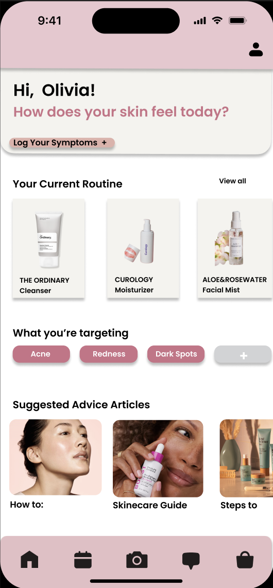

Glow: A Skincare Regulating and Product Tracking App
Mobile App Design
Helping regulate lives
Summary
My team created an app to help users understand the significance of their skincare routine and product effectiveness on their skin. We distributed a survey to gather insights into the importance of product regulation and the value of tracking skincare routines. Our research suggested that the two biggest pain points were consistency and too much work, so we designed an app where users could record newly introduced products, keep a schedule of their routines, and find product recommendations all in one place.
- User research through surveys
- Competitive Analysis
- Prototyping
- Wireframing
- Low-fidelity to high-fidelity designs
Problem
Skincare enthusiasts and beginners alike often struggle with consistency and effectiveness in their routines. Keeping track of products and ensuring they work well together can be overwhelming. Users needed a centralized, accessible solution to log products, create schedules, and receive tailored recommendations.
Challenge
The main challenge was designing an intuitive interface that allowed users to easily log and track skincare products while avoiding the complexity that might deter them from using the app consistently. Additionally, providing accurate and actionable insights based on user input was a critical hurdle.
Current Interface Comparison
Existing skincare tracking apps often fail to address the balance between simplicity and functionality. Many are overloaded with features or lack the personalization users seek. Glow was designed to bridge this gap, offering a clean, user-friendly experience that caters to individual skincare needs.
We conducted a survey targeting individuals with varying skincare routines to gather insights into their pain points. The survey revealed that 75% of users struggle with remembering product applications and schedules, while 60% expressed interest in tracking product effectiveness over time.
Competitive analysis of similar apps highlighted the need for a simpler, more engaging user interface. Our research provided a foundation for designing a unique solution tailored to these findings.
Low-fidelity sketches
After initial research, I designed low-fidelity sketches to map out user flows and app structure. The sketches focused on intuitive navigation, minimizing steps to log products, and ensuring easy access to recommendations and tracking features.
Interface Development
The development process began with transitioning from low-fidelity sketches to medium-fidelity wireframes. This allowed for iterative feedback sessions to refine usability and design clarity.
The landing page provides users with a clear starting point, emphasizing simplicity and quick access to key features like logging products and viewing recommendations.
The product details page offers users a comprehensive view of their logged items, including usage history and effectiveness tracking.
Reflection and Conclusion
Through this project, we drew conclusions from survey results to accurately identify user pain points, which guided the development of targeted solutions and features for Glow. By performing a competitive analysis of similar skincare apps, we identified effective design elements and avoided common pitfalls, ensuring a clean and intuitive interface. Finally, the creation of a high-fidelity design and prototype showcased how users could move seamlessly through the app, reflecting a smooth and engaging experience tailored to their needs.